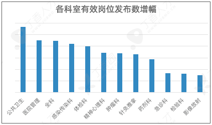
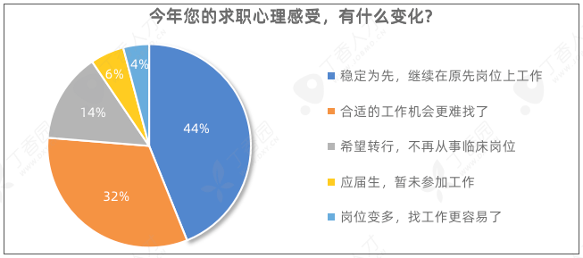
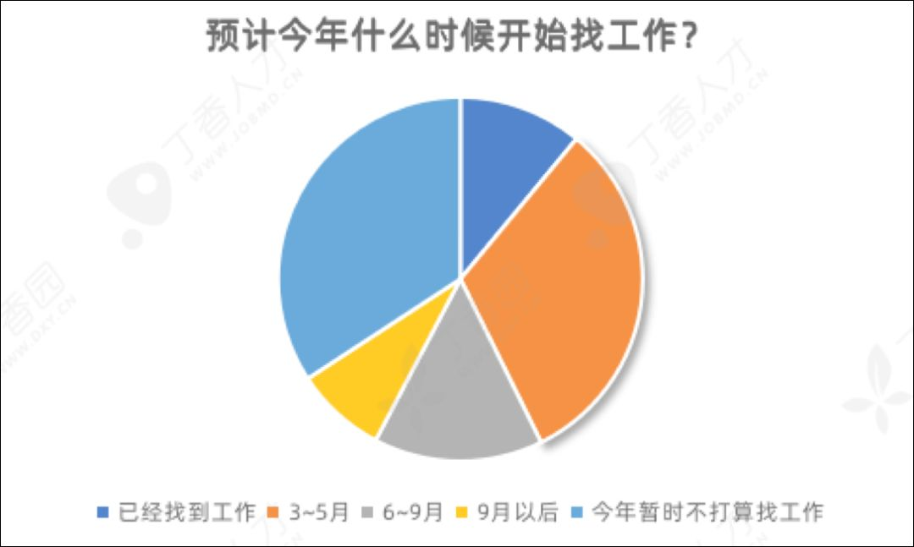

2020无春招
原文链接 备份链接 《创新经济战疫计划》，是燃财经在新型肺炎疫情期间推出的特别栏目，关注创新经济企业遇到的新难题、商讨应该采取的新对策，希望能够帮助中小企业一起战胜挑战、把握机会。 作者 | 苏琦 编辑 | 魏佳 “金三银四”的春招季，如 …

疫情之下，除了工作强度增加，不少医护人员的工资收入、绩效奖金等也受到影响，还有人表示疫情打乱了自己找工作的计划。
网上「最难就业季」的消息频出，焦虑的应届毕业生和忙碌的一线医务人员在面对 2020 年的医疗圈春招时，又会有哪些不同的感受？
丁香园联合丁香人才开展 2020 医疗春招调研，为大家带来真实的医疗圈求职现状。
国民经济受冲击
超 8 成医务人员疫情期间收入下降
3 月 16 日，国家统计局发布今年前两个月国民经济运行主要指标数据。受新冠肺炎疫情影响，前两个月我国经济运行主要指标增速有所回落。
由于营收受到影响，大量企业也不得不开始降薪裁员。有调查统计数据显示，与 2019 年相比，今年春招季企业对毕业生的需求下降了一半（49.38%）。
医疗行业同样受到影响。虽然有国家补助支持，但符合补助标准且已经领到补助的医务人员还是少数，丁香人才往期调查显示，截至 3 月 10 日，全国超八成医务人员仍未收到补助。
本次丁香人才调查报告显示，共 742 位医务人员参与调查，其中一半以上的人（56.3%）表示人绩效、奖金受到影响，基本工资没有影响。29.4% 人基本工资、绩效、奖金均受到影响，只有少数人（7.6%）的收入未受影响。

>>点此预测今年你的收入情况
而关于下降了多少，36.4% 的医护表示收入下降了 30～50%，还有 5.7% 的人工资目前还没发。

>>点此预测今年你的收入情况
医疗招聘需求逆势增长
4 月或达到求职最高峰
这次疫情再一次暴露了医务人员短缺问题，各地对医疗行业投入较前增加。在新冠肺炎疫情的推动下，省市级的三甲医院或将迎来一轮建设潮。据了解，北、上、深、广、杭以及天津、厦门等地均在计划扩建大型三甲医院。而医院的扩建和新建，也意味着人才需求的增长。（文末可查看全国扩建医院汇总）
据丁香人才后台发布有效职位统计，今年春招招聘岗位数不降反升，同比 2019 年 1～3 月有效岗位数增长 6.4%。
而根据丁香人才平台上 1～3 月有效发布科室岗位增幅显示，公共卫生、医院管理、全科、感染传染科、体检科、精神心理科、肿瘤科、针灸推拿、药剂科、急诊科成为今年春招需求大增的前 10 个科室。

同时，国家鼓励加大线上招聘力度，大力推广视频招聘、远程面试，并且支持简化招聘程序和设立招聘绿色通道，这也使得很多医院开启了线上投递和视频面试，为求职者提供了更便捷的途径，供需对接更流畅。
疫情或多或少地阻碍了招聘流程，但并不妨碍大量人才需求的涌动迸发。本次调查结果显示，53% 的医务人员表示目前尚未遇到医院招聘变化，22.5% 的人所在单位已经暂时取消招聘计划。

不过我们可以推测，在疫情缓解后，随着医院逐渐开始恢复招聘进程，多数在职医务人员得空加入跳槽队伍，4 月或迎来求职最高峰。
这 8 岗位科室竞争最激烈
平均 100 个人竞争 1 个岗位
今年应届生因为疫情开学延迟或者规培和实习延迟，只能待业在家，因而有更多的时间寻找工作机会。据丁香人才后台投递数据显示，今年春招较去年应届生投递人数同比增长 76.9%。
与应届生投递数量增加相反，在职医务人员由于忙碌在一线岗位或者心仪单位招聘信息未出而在 3 月选择沉寂，投递人数增幅不明显（仅 11%）。
本次调查显示，14.6% 的求职者遇到招聘单位只接受线上投递，还有 9.3% 的人遇到了视频面试。

丁香人才 2 月初面向用人单位的调查结果也印证了这一点，绝大多数医院（80%）今年春招采用了「线上+线下」的招聘方式，线上、线下的比重相等，只有 13% 和 6% 的医院完全采用线下面试、线上面试的方式。
在投递竞争方面，今年春招全科、康复医学、检验科、普内科、公卫、整形外科、骨科和影像放射科的科室竞争较激烈，平均 100 岗位人竞争 1 个岗位。

佛系求职者退而求其次
普遍降低薪酬预期
基于今年的春招大趋势，调查结果显示 52.4% 的医护都选择「稳定为先」，继续在原岗位工作，38.6% 的医护认为「今年合适的工作机会更难找了」。

此外，还有很多人打算放弃春招，备战秋招。调查显示，31.7% 的人打算在 3～5 月份找工作，还有 15% 的人打算在 6～9 月份再找工作。

受到疫情影响，求职者对于涨薪的期待值也有所降低。在去年的「2019 年度丁香人才求职调研」，大多数人希望可以获得 30～50% 的涨幅。而今年他们对于薪资的涨幅降低到了 20～30% 。

>>点此查询你的薪资水平
在跳槽时的关注因素上来看，与去年相同，薪酬待遇、晋升空间一直是跳槽时求职者最关注的两大因素，88.6% 的医务人员表示跳槽时最关注薪酬待遇，52.7% 表示最关注晋升空间。
值得注意的是，此前曾经很受重视的「编制」因素并没有进入医务人员求职主要考虑范围，这也许和去编制化进程推进、医务人员对编制的利弊权衡有关。
数据来源：丁香人才大数据团队
责任编辑：章佳琪、gyouza
与其观望，不如先从投递简历开始
点击下方图片，搜索最新的春招岗位！
点击下方图片，搜索你想找的岗位吧

↓↓↓点击「阅读原文」开始找工作吧
丁香园 DXY
更懂中国医生
长按二维码向我转账
更懂中国医生
受苹果公司新规定影响，微信 iOS 版的赞赏功能被关闭，可通过二维码转账支持公众号。
原文链接 备份链接 《创新经济战疫计划》，是燃财经在新型肺炎疫情期间推出的特别栏目，关注创新经济企业遇到的新难题、商讨应该采取的新对策，希望能够帮助中小企业一起战胜挑战、把握机会。 作者 | 苏琦 编辑 | 魏佳 “金三银四”的春招季，如 …
原文链接 备份链接 2020年和王晟一样的应届高校毕业生有874万，比去年多出40万人。开学推迟，春招冷清，疫情打乱了这届毕业生找工作的阵脚。走不出家门的他们，现在能做的只有时刻守在屏幕前，关注着不时跳出的招聘信息，揣测着春招的形势。 …
原文链接 备份链接 叶青武汉日记：帮助武汉的另外一群人——外省护工 5280 来源：正和岛 作者：叶青 03-21正在打榜，当前第2 [ 中国企业家杂志 - - …
原文链接 备份链接 近日，中国疫情趋于平缓，部分地区开始清零；与此同时，大量人口从国外入境，跨上归国旅程，各地口岸面临压力。 随着国际疫情进入下半场，中国应当如何应对境外病例输入？这是否会影响中国目前取得的抗疫成果？这场疫情将持续到何 …
原文链接 备份链接 【财新网】（记者 黄蕙昭）在刚刚过去的妇女节中，公众迎来一个好消息：3月8日，全国妇联宣传部部长刘亚玫表示，正在协调推动将卫生巾、安全裤等生理卫生用品纳入防疫保障用品的清单，帮女性医务工作者解决实际的困难。此前，财新在 …